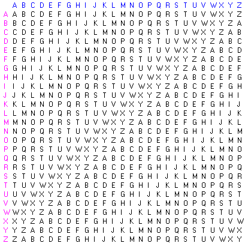

Dans ce tutoriel, nous allons découvrir quelques bases de la cryptographie, en étudiant sa forme la plus simple : les anciennes méthodes de chiffrement.
On a toujours souhaité sécuriser ses communications, et ce désir est devenu d'actualité avec le développement du réseau Internet. Les transactions en ligne se sont multipliées, et la cryptographie est aujourd'hui inévitable, notamment pour les commerces en ligne, dans le but d'éviter que ces transactions soient interceptées.
Étymologiquement, le mot « chiffrement » désigne, en cryptographie, le procédé par lequel on souhaite rendre la compréhension d'un document impossible à toute personne non autorisée à pouvoir le lire (source). Le contraire est nommé « déchiffrement ». Rappelons que la cryptologie désigne une science qui regroupe deux catégories :
la cryptographie, c'est-à-dire l'ensemble des techniques permettant de chiffrer un message ;
la cryptanalyse, dont nous parlerons un peu plus tard.
Le message de départ est appelé texte clair (plaintext en anglais, prononcez [pleyntekst]) et le message chiffré texte chiffré ou cryptogramme (ciphertext en anglais, prononcez [sahyfertekst]). Pour chiffrer un message, on utilise un algorithme, que l'on nomme « cryptosystème ».
Aussi étonnant que cela puisse paraître à première vue, les algorithmes de chiffrement et de déchiffrement doivent toujours être publics. En effet, il ne sert à rien de tenter de les garder secret : on n'obtiendrait qu'une fausse impression de sécurité. Malgré de nombreuses alertes, il arrive que de très grosses entreprises, souvent mal informées, tentent de le faire : c'est la sécurité par l'obscurité, qui, je le répète, n'a aucune utilité.
Mais alors, si les algorithmes sont publics, tout le monde peut décrypter les textes chiffrés, non ?
Vous vous en doutez bien, cette affirmation est fausse. En réalité, le secret est conservé grâce aux paramètres des algorithmes, qu'on appelle les clés de chiffrement. Ce principe est appelé principe de Kerckhoffs, nommé ainsi en hommage au cryptologue néerlandais Auguste Kerckhoffs, qui a énoncé ce concept dans un article en deux parties La cryptographie militaire, paru dans le Journal des sciences militaires en janvier et février 1883 (vous pouvez par ailleurs en retrouver l'intégralité iciet là). De plus, cette notion s'étend au-delà de la cryptographie. Ré-énoncée par de grands noms de l'informatique comme Claude Shannon dans son très célèbre « L'adversaire connaît le système », elle est également un des arguments évoqués par les défenseurs des logiciels libres (source). Autrement dit, on peut représenter l'algorithme (de chiffrement ou de déchiffrement) comme une fonction qui prend deux paramètres : le texte clair (dans le cas d'un chiffrement) ou le texte chiffré (dans le cas d'un déchiffrement) et la clé de chiffrement ou de déchiffrement. La fonction est connue, le texte aussi, mais la clé manque à la personne lambda, qui ne peut ainsi pas résoudre le cryptogramme.
Bien, la partie plus « théorique » est terminée, nous allons donc passer à quelques exemples d'algorithmes de chiffrement. Munissez-vous d'un papier et d'un crayon, cela sera plus simple.
Chiffre de César
Le chiffre de César (ou chiffrement par décalage) est un algorithme de chiffrement très simple que Jules César utilisait pour chiffrer certains messages qu'il envoyait (source). Il s'agit d'une substitution mono-alphabétique car il remplace chaque lettre par une autre lettre de l'alphabet, toujours la même.
Principe de chiffrement
Ce cryptosystème consiste à remplacer chaque lettre du texte clair, par une lettre différente, située x lettres après dans l'alphabet, où x est la valeur de la clé passée en argument. Si l'on considère que chaque lettre de l'alphabet est numérotée de 0 à 25 (A = 0, B = 1, etc.), cela revient à additionner la valeur de la lettre du texte clair avec la valeur de la clé. Ensuite, pour éviter que la valeur dépasse le 'Z', on fait modulo 26 sur le résultat précédent.
Rappelons que le modulo est une opération mathématique permettant d'obtenir le reste d'une division. Si vous n'avez peut-être eu que peu d'occasions d'étudier celle-ci, l'ordinateur quant à lui la considère comme une opération de base, au même titre que l'addition, la soustraction, la multiplication et la division.
Par exemple, pour coder la première lettre de l'expression « J'adore les maths ! » (le 'J') avec une clé de 4, on fera :
La valeur de 14 correspondant à la lettre 'N', on peut d'ores et déjà noter que la première lettre du texte chiffré sera un 'N'. Si l'on suit cette logique, à la fin du chiffrement vous devriez obtenir sur votre feuille de papier ce qui suit.
J'ADORE LES MATHS !
N'EHSVI PIW QEXLW !
Le texte chiffré est donc : « N'EHSVI PIW QEXLW ! ».
Principe de déchiffrement
Le déchiffrement fonctionne sur le même principe que le chiffrement, on prend la lettre située quatre lettres avant dans notre exemple.
N'EHSVI PIW QEXLW !
J'ADORE LES MATHS !
Chiffre de Vigenère
Introduction
Le chiffre de Vigenère est un algorithme de chiffrement établi par le cryptographe français Blaise de Vigenère. Ce cryptosystème est de type poly-alphabétique, en opposition au mono-alphabétique que avons déjà vu, c'est-à-dire qu'il consiste à changer une lettre par une autre, mais cette dernière n'est pas toujours là même. Cela permet une plus grande sécurité. Cet algorithme utilise une clé, ici sous la forme d'un mot ou d'une phrase, que vous choisirez. Plus l'expression sera longue, plus le cryptogramme sera sécurisé.
Un autre outil indispensable pour chiffrer un message avec cette méthode est la table de Vigenère :

Table de Vigenère
Rassurez-vous, je ne vous demande pas de l'apprendre par cœur ! On trouve beaucoup d'images de cette table grâce à un simple moteur de recherche.
Principe de chiffrement
Le chiffrement se déroule en deux étapes. Dans un premier temps, on choisit un message, par exemple « Bonjour les zéros ! » et une clé, par exemple « Zozor ». Bref, commencez par écrire votre message sur le papier.
BONJOUR LES ZÉROS !
En-dessous de chaque lettre, écrivez chaque lettre de la clé, et répétez le motif autant de fois que nécessaire. Ce qui donne, dans notre exemple :
BONJOUR LES ZÉROS !
ZOZORZO ZOR ZOZOR !
Dans un second temps, sachez que le message correspond aux colonnes de la table, et la clé aux lignes. Pour chaque lettre du message, la lettre chiffrée correspond au croisement entre la colonne correspondant à la lettre du message et la ligne correspondant à la lettre de la clé. Par exemple, la lettre qui est au croisement entre la colonne 'B' et la ligne 'Z' est 'A'. La première lettre du message chiffrée est donc 'A'. Si l'on continue, cela donne au final :
BONJOUR LES ZÉROS !
ZOZORZO ZOR ZOZOR !
ACMXFTF KSJ YSQCJ !
Le message chiffré est donc « ACMXFTF KSJ YSQCJ ! ». Bien qu'à première vue le message semble sécurisé, il est évident que la clé « ZOZOR » est trop courte et, de manière générale, le chiffre de Vigenère n'est pas un algorithme très sécurisé. Il est donc facile de casser le cryptogramme, du moins pour les personnes un peu expérimentées dans ce domaine.
Principe de déchiffrement
Pour déchiffrer le texte chiffré, on prend de nouveau un bout de papier, et on note le message codé, suivi du motif de la clé répété autant de fois que nécessaire, ce qui donne :
ACMXFTF KSJ YSQCJ !
ZOZORZO ZOR ZOZOR !
Ensuite, on fait l'inverse que lors du chiffrement. On va vers la ligne correspondant à la lettre actuelle de la clé, et on cherche la lettre actuelle du texte chiffré dans cette ligne. La lettre en clair correspond à la colonne correspondante. Ce qui donne, dans notre cas :
ACMXFTF KSJ YSQCJ !
ZOZORZO ZOR ZOZOR !
BONJOUR LES ZEROS !
On retrouve donc notre message de départ ! :)
Bonus mathématique
Je vous propose un petit supplément mathématique. En effet, il est possible de calculer la lettre chiffrée correspondant à une lettre claire grâce à la lettre de la clé. Si l'on suppose que x est la lettre de la clé, y la lettre du texte chiffré et z la lettre du texte clair, en voici la formule :
Par exemple, reprenons notre « BONJOUR LES ZEROS » et notre clé « ZOZOR ». Pour calculer la première lettre chiffrée :
y = (z + x)modulo26y = (1 + 25)modulo26y = 26modulo26y = 0
La lettre chiffrée est donc bien 'A'.
De même, on peut déchiffrer un message mathématiquement, grâce aux formules suivantes. On suppose que x est la lettre de la clé, y la lettre du texte chiffré et z la lettre du texte clair.
Si (x > y) : z = (26 - x) + y Sinon : z = y - x (source)
Reprenons notre « ACMXFTF KSJ YSQCJ ! » et notre clé « ZOZOR ». La première lettre est :
x > y, donc :
z = (26 - x) + yz = (26 - 25) + 1z = 1 + 1z = 2
La première lettre du message clair est bien 'B'.
Le masque jetable (ou chiffre de Vernam)
Le masque jetable est un cryptosystème établi par l'ingénieur Gilbert Vernam. En théorie, cet algorithme de chiffrement est réputé comme étant le seul à être impossible à casser.
Principe de chiffrement
Pour chiffrer un message, on doit prendre une clé, qui doit avoir les caractéristiques suivantes :
la clé doit avoir un nombre de caractères supérieur ou égal à celui du message ;
les caractères de la clé doivent avoir été choisis de manière aléatoire ;
chaque clé ne doit être utilisée qu'une seule fois.
Toutes ces propriétés dans le but final de garantir une sécurité optimale. Si elles sont respectées à la lettre, la sécurité garantie est absolue.
Bien, on passe à un exemple concret. Pour ne pas mettre trop de temps à chiffrer le message, nous allons en prendre un de quatre lettres : « ZERO ». Nous tirons ensuite une chaîne de quatre lettres au hasard. Le résultat : « JRVG ». Ceci est la clé. On attribue ensuite une valeur différente à chaque lettre de l'alphabet. Pour faire simple, nous choisissons le même principe que pour le chiffre de César : 'A' vaut 0, 'B' vaut 1, 'C' vaut 2, etc. La suite est semblable au calcul du chiffre de Vigenère : on additionne la valeur de chaque lettre du message avec la valeur de la lettre de la clé correspondante, puis on fait modulo 26. Armez-vous de votre papier et de votre crayon, pour obtenir, normalement, ces résultats :
Z + J = 25 + 9 = 34 - 26 = 8 = I
E + R = 4 + 17 = 21 = V
R + V = 17 + 21 = 38 - 26 = 12 = M
O + G = 14 + 6 = 20 = U
Ce qui nous donne au final, le cryptogramme suivant : « IVMU ».
Principe de déchiffrement
Le déchiffrement s'effectue à peu près de la même manière, mis à part que, cette fois-ci, on soustrait la valeur de la lettre de la clé à la valeur de la lettre du cryptogramme correspondante et que l'on ajoute 26 lorsque le résultat est négatif. Cela nous donne :
I - J = 8 - 9 = -1 + 26 = 25 = Z
V - R = 21 - 17 = 4 = E
M - V = 12 - 21 = -9 + 26 = 17 = R
U - G = 20 - 6 = 14 = O
Et on retrouve bien le message « ZERO » de départ.
Défauts
Chouette, alors ! Ce cryptosystème est parfait : simple et incassable ! Nous pouvons donc l'utiliser tout le temps ? :)
On ne peut nier qu'il a l'avantage d'être simple, mais il n'est incassable qu'en théorie. En effet, il faut que le chiffrement ait été réalisé dans des circonstances parfaites :
D'une part, la clé choisie doit être absolument aléatoire. Si elle ne l'est pas, le cassage peut être réalisé beaucoup plus facilement. Seulement, générer une clé de manière parfaitement aléatoire est très difficile à mettre en œuvre, c'est pourquoi beaucoup d'utilisateurs de ce cryptosystème passent par des moyens moins sécurisés (source).
D'autre part, pour que le chiffrement et le déchiffrement puissent être réalisés, il faut que les deux utilisateurs aient en leur possession la même clé, d'où la nécessité d'une communication ultra-sécurisée. Une des solutions peut être d'organiser un contact physique, mais cela n'est pas toujours possible (et, de plus, cela enlève l'utilité principale du chiffrement : pourquoi chiffrer des messages si on peut les communiquer à voix haute ? :-° ). Par conséquent, l'utilisateur est de nouveau tenté par l'utilisation d'un canal moins sécurisé.
Quand on résout un cryptogramme, de manière plus ou moins « légale », on dit que l'on « casse » le chiffrement. Déchiffrer un message sans en connaître la clé de chiffrement est le principe de la cryptanalyse, une des deux branches constituant la cryptologie. Maintenant que nous avons vu différents algorithmes de chiffrement, plus ou moins sécurisés, nous allons découvrir les principales méthodes auxquelles ont recourt les cryptanalystes pour casser divers chiffrements.
Analyse fréquentielle des lettres
L'analyse fréquentielle des lettres est la méthode la plus utilisée pour casser un chiffrement. Elle consiste, en partant des statistiques d'utilisation des lettres en français (si le message est en français, bien sûr), à examiner la fréquence d'apparition des lettres dans le message chiffré. Pour cela, je vous offre les statistiques d'apparition des lettres en français (source) :
1. e : 17,115%
2. a : 8,122%
3. s : 7,948%
4. i : 7,580%
5. t : 7,244%
6. n : 7,095%
7. r : 6,553%
8. u : 6,369%
9. l : 5,456%
10. o : 5,378%
11. d : 3,669%
12. c : 3,345%
13. p : 3,021%
14. m : 2,968%
15. v : 1,628%
16. q : 1,362%
17. f : 1,066%
18. b : 0,901%
19. g : 0,866%
20. h : 0,737%
21. j : 0,545%
22. x : 0,387%
23. y : 0,308%
24. z : 0,136%
25. w : 0,114%
26. k : 0,049%
Bien, prenons un exemple : un message que j'ai chiffré grâce à l'algorithme du chiffre de César :
Ce qu'il faut chercher, c'est la clé. Pour cela, on va faire les statistiques d'apparition des lettres dans ce cryptogramme, et notamment la lettre la plus présente (il serait donc possible que ce soit un 'E'). On peut donc assez vite constater que la lettre la plus présente ici est le 'G', avec neuf occurrences (soit 20%). Supposons donc que le 'G' chiffre le 'E'. Sachant que le chiffre de César est utilisé, on peut supposer que la clé soit :
G - E = 6 - 4 = 2
Toujours de façon conditionnelle, la clé pourrait être égale à 2. On fait donc un test, en déchiffrant à l'aide du chiffre de César avec une clé de 2.
NG UKVG FW BGTQ GUV IGPKCN, N'CWVGWT FG EG VWVQTKGN CWUUK !
LE SITE DU ZÉRO EST GÉNIAL, L'AUTEUR DE CE TUTORIEL AUSSI !
La phrase décryptée est donc : « LE SITE DU ZÉRO EST GÉNIAL, L'AUTEUR DE CE TUTORIEL AUSSI ! », ce qui a un sens. Félicitations ! Vous venez de casser votre premier algorithme. Je vous fais confiance pour ne pas communiquer nos méthodes aux services secrets ! :ninja:
Attaque par force brute
La seconde méthode de cassage d'algorithme est l'attaque par force brute. C'est la méthode « bourrin » qui consiste à tester toutes les possibilités de clé. Cela peut paraître assez fou, mais, en sachant qu'un ordinateur peut tester plusieurs milliers de clés par seconde, et à condition que la clé ne soit pas trop grande, le cassage est possible.
De manière plus concrète, voici quelques chiffres représentant le nombre maximum d'essais nécessaires pour trouver la clé en fonction du nombre de caractères la constituant (source) :
Type
Trois caractères
Quatre caractères
Cinq caractères
Minuscules
26^3 = 17 576
26^4 = 456 976
26^5 = 11 881 376
Minuscules et majuscules
52^3 = 140 608
52^4 = 7 311 616
52^5 = 380 204 032
Minuscules, majuscules et chiffres
62^3 = 238 328
62^4 = 14 776 336
62^5 = 916 132 832
Eh bien voilà, ce mini-tutoriel sur les premiers algorithmes de chiffrement s'arrête ici.
Je suis ouvert à toute remarque ou critique constructive :
n'hésitez pas à donner votre avis sur le sujet du forum consacré à ce tutoriel (ici) ou dans ses commentaires ;
faites moi part de vos suggestions par MP en débutant le titre de votre message par [CRYPTOGRAPHIE 1] ;
s'l y a une notion que vous ne comprenez pas bien, posez votre question sur le forum.
GTSSJ HTSYNSZFYNTS XZW QJ XNYJ IZ EJWT ! JY JSHTWJ, O'FZWFNX UZ HMNKKWJW YTZY QJ YZYTWNJQ ! :diable:
Bon, allez, un petit indice : j'ai chiffré ces phrases grâce au chiffre de César...